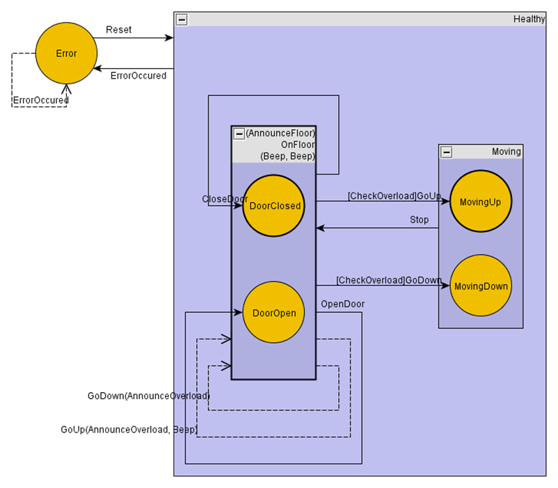

Reports can be used to check whether your state machine implementation is correct and for documentation purposes.
There are different built-in reports. And you can implement your own report by implementing IStateMachineReport.
To get reports with meaningful action names, you should always specify methods in the state machine definition instead of lambda expressions. Lambda expressions will only be reported as anonymous method.
A report can be created by calling Report on a state machine a pass in a report generator.
The yEd report generates a file that can be opened with the yEd. This report contains states, events, transitions with guards and actions.
The csv report creates two .csv files. One containing the states with sub-states, entry and exit actions. And another file containing information about transitions with guards and actions.
| Source | Entry | Exit | Children |
| OnFloor | AnnounceFloor | Beep, Beep | DoorClosed, DoorOpen |
| Moving | MovingUp, MovingDown | ||
| Healthy | OnFloor, Moving | ||
| MovingUp | |||
| MovingDown | |||
| DoorClosed | |||
| DoorOpen | |||
| Error |
| Source | Event | Guard | Target | Actions |
| OnFloor | CloseDoor | DoorClosed | ||
| OnFloor | OpenDoor | DoorOpen | ||
| OnFloor | GoUp | CheckOverload | MovingUp | |
| OnFloor | GoUp | internal transition | AnnounceOverload, Beep | |
| OnFloor | GoDown | CheckOverload | MovingDown | |
| OnFloor | GoDown | internal transition | AnnounceOverload | |
| Moving | Stop | OnFloor | ||
| Healthy | ErrorOccured | Error | ||
| Error | Reset | Healthy | ||
| Error | ErrorOccured | internal transition |
The textual report is the only report containing all information about the state machine including history types.
Elevator: initial state = OnFloor
Healthy: initial state = OnFloor history type = Deep
entry action:
exit action:
ErrorOccured -> Error actions: guard:
OnFloor: initial state = DoorClosed history type = None
entry action: AnnounceFloor
exit action: Beep, Beep
CloseDoor -> DoorClosed actions: guard:
OpenDoor -> DoorOpen actions: guard:
GoUp -> MovingUp actions: guard: CheckOverload
GoUp -> internal actions: AnnounceOverload, Beep guard:
GoDown -> MovingDown actions: guard: CheckOverload
GoDown -> internal actions: AnnounceOverload guard:
DoorClosed: initial state = None history type = None
entry action:
exit action:
DoorOpen: initial state = None history type = None
entry action:
exit action:
Moving: initial state = MovingUp history type = Shallow
entry action:
exit action:
Stop -> OnFloor actions: guard:
MovingUp: initial state = None history type = None
entry action:
exit action:
MovingDown: initial state = None history type = None
entry action:
exit action:
Error: initial state = None history type = None
entry action:
exit action:
Reset -> Healthy actions: guard:
ErrorOccured -> internal actions: guard: